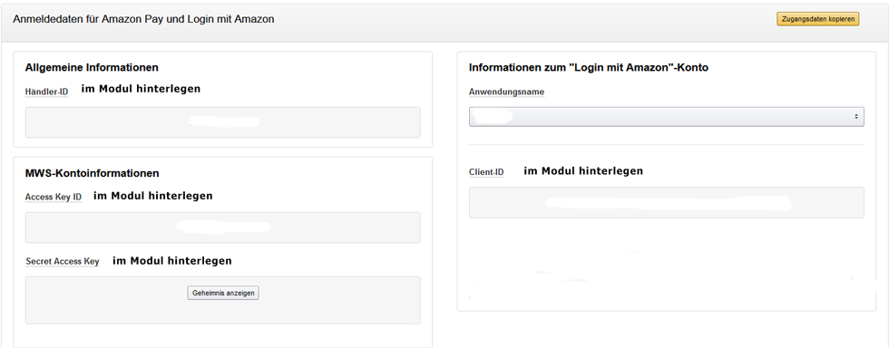
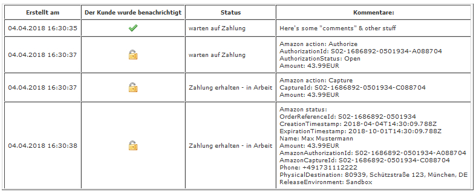

Login und Bezahlen via Amazon (Amazon Pay) 2.2.5 für Zen Cart 1.5.6 deutsch
Sinn und Zweck dieses Moduls
Dieses Modul ermöglicht die Zahlungsart Amazon Pay in Ihrem Zen Cart Shop.
Dieses Modul setzt die Lieferung physischer Waren mit einer Versandadresse voraus. Für einen Downloadshop digitaler Artikel ist es NICHT geeignet! Es wird deaktiviert, wenn virtuelle Artikel im Warenkorb sind.
Kunden können direkt mit ihrem Amazon Account zahlen und alle dort hinterlegten Zahlungsarten zu verwenden.
Wählt der Kunde Bezahlen via Amazon kann er sich mit seinem Amazon Konto (Amazon Emailadresse und Amazon Passwort) einloggen, im Shop wird dann ein enstprechendes Kundenkonto automatisch angelegt, falls die Emailadresse noch nicht vorhanden ist.
Sollte die Emailadresse bereits vorhanden sein, wird das bestehende Kundenkonto verknüpft.
Der Kunde muss im Shop keinerlei Kundendaten angeben, er wählt die gewünschte Zahlungsart und Lieferadresse in einem eigenen Checkout Prozess direkt aus seinem Amazon Adressbuch aus und genau diese Daten werden dann für die Bestellung als Rechnungs- und Lieferadresse verwendet.
Es werden keinerlei Details über die bestellten Artikel an Amazon übermittelt, hier geht es rein um die Bezahlung. Es werden keine Informationen über den Warenkorb-Inhalt an Amazon übermittelt. Lediglich der Gesamtwert des Warenkorbs wird zur Zahlungsabwicklung übermittelt.
Amazon Pay steht derzeit (Stand März 2018) nur für Shopinhaber mit Firmensitz in Deutschland, Österreich, Belgien, Dänemark, Frankreich, Großbritannien, Italien, Irland, Luxemburg, Niederlande, Portugal, Schweden, Spanien, Ungarn oder Zypern zur Verfügung.
Das Modul kann zunächst mit einem Sandbox Account vollständig ohne echte Transaktionen getestet werden.
Voraussetzungen:
- Zen Cart 1.5.6 deutsch
- Shop verwendet durchgehend SSL
- Bundesland ist im Shop NICHT aktiv (Konfiguration > Kundendetails)
- Firma des Shopinhabers hat Sitz in Deutschland, Österreich, Belgien, Dänemark, Frankreich, Großbritannien, Italien, Irland, Luxemburg, Niederlande, Portugal, Schweden, Spanien, Ungarn oder Zypern (Stand März 2018)
- Amazon Seller Account
- Amazon Payments Konto
- Login mit Amazon ID und andere Kennungen erstellt
(siehe beiliegendes pdf Wie-bekomme-und-nutze-ich-meine-Login-mit-AmazonClient-ID.pdf)
Copyright, Lizenz, Changelog
Übersetzung/Anpassung/Überarbeitung des Moduls Amazon Pay 1.0 von webiprog für die deutsche Zen Cart Version 1.5.6
Copyright Originalmodul 2014-2017:
www.webiprog.de
Version 2.2.5
2020-05-06
webchills
- fehlenden logs Ordner ergänzt
- Abfangen des Check Authorization status reason codes in includes/modules/checkout_frites_process.php um Anlegen von Bestellungen ohne erfolgreiche Zahlung besser zu verhindern
Version 2.2.4
2019-07-20
webchills
- Anpassungen für Zen Cart 1.5.6 und PHP 7.3
- Anleitung aktualisiert
- Version 2.2.4 ist ausschließlich für Zen Cart 1.5.6 deutsch geeignet!
Version 2.2.3
2019-05-25
webchills
- Infoseite zur möglichen Blockade des Amazon Widgets in neuen Firefox Versionen integriert
- Prominentere Plazierung des Amazon Buttons mit Infotext auf der Loginseite
- Durchgehende Übergabe von 2 Nachkommastellen bei der Bestellsumme zur Vorbereitung auf SCA Compliance
Version 2.2.2
2018-07-31
webchills
- Anpassungen für 1.5.5f deutsch
- Bei Amazon Rückmeldung transaction timed out wird keine Bestellung mehr ausgelöst
Version 2.2.1
2018-04-04
webchills
- Unnötige Anzeige des Modulnamens auf der checkout_frites_confirmation Seite entfernt
- Eingabe von Aktionskupons sichtbar geschaltet
- Fix für abgebrochene Bestellungen aufgrund von Zeilenumbrüchen in Bestellkommentaren
- Anleitung aktualisiert
Version 2.2.0
2018-03-21
webchills
- Korrekte Übernahme von Firmennamen in Lieferadressen
- Einschränkungsmöglichkeit auf Zonen entfernt
- Unnötige Funktionen entfernt
- Anpassungen für PHP 7.1
- Unterstützte Shop Länder erweitert (Stand Ende März 2018)
- Anleitung aktualisiert
Version 2.1.0
2018-01-16
webchills
- Korrekte Integration der Bestätigung von AGB und Widerruf
- Bugfix für Checkout Button bei versandkostenfreiem Versand
- Modul bei Bestellung von virtuellen Artikeln deaktiviert
- Nötige Änderungen bei Verwendung der Module Bestellen ohne Kundenkonto oder Datenweitergabe an Versandunternehmen hinzugefügt
- Anleitung aktualisiert
Version 2.0.0
2017-11-16
webchills (www.webchills.at)
Änderungen/Fehlerbehebungen gegenüber der Original Version 1.0:
- Unterstützung der in Zen Cart 1.5.5 verwendeten mehrsprachigen Ländernamen
- Anpassung der Dateien an die deutsche Zen Cart Version 1.5.5
- Kundenkommentare in der Bestellung werden übernommen
- Firmennamen aus dem Amazon Adressbuch werden korrekt übernommen
- Um zu verhindern, dass Kunden nach abgebrochener Amazon Zahlung mit unvollständigen Kundendaten mit einer anderen Zahlungsart zur Kasse gehen, werden Kunden mit fehlenden Stammdaten zuerst zur Accountseite geleitet, um ihre Daten zu aktualisieren
- Entfernen des von Amazon hinterlegten Bundeslandes nach erfolgreicher Amazonzahlung um Schwierigkeiten mit PayPal bei künftigen Bestellungen zu verhindern
- Konfigurationsoptionen auf deutsch hinterlegt
- Anleitung aktualisiert
Portions Copyright (c) 2003-2020 Zen Cart
This contribution is subject to version 3.0 of the GPL license available through the world-wide-web at the following url:
http://www.zen-cart-pro.at/license/3_0.txt
Installation
Voraussetzungen
Dieses Modul ist nur für Zen Cart 1.5.6 deutsch geeignet
Für den Einbau dieses Moduls sollten Sie über folgende Werkzeuge verfügen:
1) Ein guter Texteditor.
Damit ist nicht das in Windows enthaltene Notepad oder Microsoft Word gemeint.
Sie benötigen einen Texteditor, der utf-8 versteht und auch im Format utf-8 ohne BOM abspeichern kann.
Meine Empfehlung: UltraEdit (kostenlose 30 Tage Testversion verfügbar)
Ebenfalls gut geeignet ist der kostenlose Texteditor Notepad++
2) Ein Tool zum Vergleichen von Dateien
Bei der Installation dieses Moduls ist es erforderlich, dass Sie den Inhalt einiger Ihrer bestehenden Zen Cart Dateien mit dem Inhalt der neuen Moduldateien vergleichen und die Änderungen zusammenführen ("mergen").
Meine Empfehlung: BeyondCompare (kostenlose 30 Tage Testversion verfügbar)
Ebenfalls gut geeignet ist das kostenlose Programm WinMerge
Empfehlung:
Dieses Modul erst in einem Testsystem einbauen und dort konfigurieren/testen und endgültig an die eigenen Wünsche anpassen. Erst dann in einem Liveshop einsetzen! Sichern Sie unbedingt alle Dateien Ihres Shops per FTP und sichern Sie die Datenbank mit phpMyAdmin oder anderen geeigneten Tools!
Vor dem Einbau dieser Änderungen:
BACKUP von Shop und Datenbank machen!
Keine Haftung, Verwendung auf eigene Gefahr!
BACKUP gemacht? Ok, dann weiterlesen...
Die Installation erfolgt in folgenden Schritten. Halten Sie diesen Ablauf ein!
Bevor Sie das Modul einbauen, stellen Sie Folgendes sicher:
1)
Sie haben einen Amazon Seller Account und Ihr Firmensitz ist Deutschland, Frankreich, Italien, Großbritannien oder Spanien:
https://sellercentral.amazon.de
2)
Sie haben sich für Amazon Pay registriert:
https://pay.amazon.com/de/signup
3)
Sie haben die im beiligenden pdf Wie-bekomme-und-nutze-ich-meine-Login-mit-AmazonClient-ID.pdf beschriebenen Schritte durchgeführt und eine Login mit Amazon ID und die entsprechenden Kennungen erstellt.
4)
Optional aber dringend empfohlen:
Sie haben in Ihrem Amazon Seller Account einen Sandbox User angelegt:
https://pay.amazon.com/de/developer/documentation/lpwa/201956330
5)
Falls Sie bereits eine ältere Version dieses Moduls im Shop aktiv haben, deinstallieren Sie die alte Version vorher komplett und entfernen Sie unter Module Zahlungsarten zunächst das Amazon Pay Modul bevor Sie die neue Version 2.2.4 hochladen!
Alles vorhanden und eingerichtet?
Dann in folgenden Schritten das Modul installieren:
1)
Im Ordner NEUE DATEIEN den Ordner namens DEINTEMPLATE auf das im Shop verwendete Template umbennen (z.B. viennaorange, responsive_classic, ...). Den Ordner DEINADMIN auf den Namen Ihres admin Verzeichnisses umbenennen.
2)
Überprüfen Sie nun erst nochmal ob Sie wirklich in Schritt 1 die Ordner in NEUE DATEIEN entsprechend umbenannt haben.
Ja?
Dann nun alle Dateien/Ordner aus dem Ordner NEUE DATEIEN in der vorgegebenen Struktur in die Zen Cart Installation hochladen.
Dabei werden keine bestehende Dateien überschrieben.
Geben Sie nun folgendem Ordner Schreibrechte (chmod777):
includes/modules/payment/frites/logs
3)
Im Ordner GEAENDERTE DATEIEN alle Ordner namens DEINTEMPLATE auf das im Shop verwendete Template umbennen (z.B. viennaorange, responsive_classic, ...). Den Ordner DEINADMIN auf den Namen Ihres admin Verzeichnisses umbenennen.
Wenn Sie Zen Cart 1.5.6 gerade frisch installiert haben und noch keinerlei Änderungen an den Dateien vorgenommen haben, können Sie nun alle Dateien/Ordner aus dem Ordner GEAENDERTE DATEIEN in der vorgegebenen Struktur in die Zen Cart Installation hochladen. Dabei werden dann bestehende Dateien überschrieben.
Wenn Sie Zen Cart 1.5.6 schon länger im Einsatz haben und schon einmal Änderungen an Dateien vorgenommen oder andere Module eingebaut haben, dann laden Sie die Dateien keinesfalls einfach hoch.
Vergleichen Sie stattdessen alle Dateien im Ordner GEAENDERTE DATEIEN mit den entsprechenden Dateien in Ihrem Shop und nehmen Sie die Änderungen manuell per WinMerge oder BeyondCompare vor.
Dann spielen Sie die geänderten Dateien in der gezeigten Struktur ein.
4) OPTIONAL: Nur nötig wenn Sie das Modul Bestellen ohne Kundenkonto verwenden:
Falls Sie im Shop zusätzlich das Modul Bestellen ohne Kundenkonto (COWOA) verwenden, dann ändern Sie noch unbedingt folgende Dateien in Ihrem Shop ab:
includes/modules/pages/account_edit/header_php.php
includes/modules/pages/checkout_frites_login/header_php.php
Entsprechende Beispieldateien sind im Ordner OPTIONAL/BESTELLEN OHNE KUNDENKONTO
5) OPTIONAL: Nur nötig wenn Sie das Modul Datenweitergabe an Versandunternehmen verwenden:
Falls Sie im Shop zusätzlich das Modul Datenweitergabe an Versandunternehmen verwenden, dann ändern Sie noch unbedingt weitere Dateien in Ihrem Shop ab.
Entsprechende Beispieldateien sind im Ordner OPTIONAL/DATENWEITERGABE AN VERSANDUNTERNEHMEN
6)
In die Zen Cart Administration einloggen
7)
Stellen Sie unter Konfiguration > Layouteinstellungen Anmeldeseite geteilt anzeigen auf True
8)
In der Zen Cart Administration unter Module > Zahlungsarten das neue Modul Bezahlen mit Amazon (frites) installieren.
Unter Konfiguration weiterlesen für Hilfe zu den anzugebenden Einstellungen.
KONFIGURATION
Bezahlen mit Amazon-Modul aktivieren
True oder False
Stellen Sie zunächst auf False, erst aktivieren wenn Sie alles eingerichtet haben
Standard Bestellstatus = Status auf den eine Amazonbestellung zuallererst gesetzt wird
Beispiel:
warten auf Zahlung [1]
Autorisierter Bestellstatus = Status des ersten Durchlaufs bei Amazon (AUTHORIZE)
Beispiel:
warten auf Zahlung [1]
Erfasster Bestellstatus = Zahlung bei Amazon erfolgreich abgeschlossen (CAPTURE)
Beispiel:
Zahlung erhalten - in Arbeit [2]
Erfüllter Bestellstatus = Zahlung bei Amazon erfolgreich abgeschlossen
Beispiel:
Zahlung erhalten - in Arbeit [2]
Stornierter Bestellstatus = Zahlung bei Amazon nicht erfolgreich
Beispiel:
Storniert [5]
Rückgezahlter Bestellstatus
Beispiel:
Storniert [5]
Sortierreihenfolge
steuert die Reihenfolge der angebotenen Zahlungsmodule
Niedrige Werte werden zuoberst angezeigt
Die folgenden Werte finden Sie in Ihrem Amazon Pay Account im Menü
Integration > MWS Access Key:

Händler-ID
Ihre Amazon Händler ID
sieht z.B. so aus
A5O7ABCD9ABC12
Client-ID
sieht z.B. so aus
amzn7.application-oa7-client.12a123456ab123456abcdefg
MWS Access Key-ID
sieht z.B. so aus
ABCDEFG1AB2BBYABCDEF
MWS Secret Access Key (nicht verwechseln mit dem Client Secret, dieses wird NICHT benötigt)
sieht z.B. so aus
Fvp+iN+ih/FBePqOOFZm0zVNT1iMJqLmlwBC2XhR
Zahlungsregion
Euro Region
außer Ihr Shop befindet sich in Großbritannien
Standarprache auswählen
auf DE lassen
Live oder Sandbox
sandbox
Verwenden Sie zunächst unbedingt die Sandbox Umgebung, damit Sie in Ihrem Testshop Amazon Zahlungen ohne echte Transaktionen testen können, um sich mit der Funktionsweise vertraut zu machen
Debugging-Modus
Log File nur zum Testen aktivieren, es werden dann Logs in den Ordner includes/modules/payment/frites/logs geschrieben. Dieser Ordner benötigt Schreibrechte (chmod777)
Falls in Ihrer includes/configure.php ein bestimmter genereller Ordner für Logfiles angegeben ist, dann wird dieser Ordner verwendet.
Größe des Kassen-Buttons
small
Einfach nach Aktivierung ausprobieren, welcher am besten zu Ihrem Shoplayout passt
Button-Stil
Gold
Einfach nach Aktivierung ausprobieren, welcher am besten zu Ihrem Shoplayout passt
Adressbuch-Breite
700px
Kann nur in Pixel nicht in Prozent sein!
Einfach nach Aktivierung ausprobieren, welche Breite am besten zu Ihrem Shoplayout passt
Adressbuch-Höhe
260px
Kann nur in Pixel nicht in Prozent sein!
Einfach nach Aktivierung ausprobieren, welche Höhe am besten zu Ihrem Shoplayout passt
Zahlungsart-Breite
700px
Kann nur in Pixel nicht in Prozent sein!
Einfach nach Aktivierung ausprobieren, welche Breite am besten zu Ihrem Shoplayout passt
Zahlungsart-Höhe
260px
Kann nur in Pixel nicht in Prozent sein!
Einfach nach Aktivierung ausprobieren, welche Höhe am besten zu Ihrem Shoplayout passt
Telefonnummer erforderlich?
False
Falls Sie in Ihrem Shop die Telefonnummer bei der Registrierung als Pflichtfeld vorsehen, stellen Sie hier auf True.
Wenn ein Kunde den Checkout mit Amazon startet, wird ein Kundenkonto angelegt, das zunächst keine Telefonnummer enthält.
Wählt der Kunde dann doch eine andere Zahlungsart, würde er ohne Telefonnummer zur Kasse gehen. Ist diese Einstellung aktiv, dann wird das verhindert, da der Kunde dann zunächst aufgefordert wird, seine Telefonnummer zu ergänzen.
Wenn die Telefonnummer in Ihrem Shop kein Pflichtfeld ist, stellen Sie hier auf False.
Stellen Sie hier auch auf False, falls Sie im Shop auch PayPal Express mit Express Button verwenden. Sonst werden Kunden im PayPal Express Checkout gezwungen erst ihre Telefonnummer zu hinterlegen, was den Express Checkout unnötig verlängert. Wenn die Telefonnummer in Ihrem Shop sehr wichtig ist, stellen Sie in Ihrem PayPal Account ein, dass PayPal den Kunden nach der Telefonnummer optional fragen soll.
Aktivieren Sie nun das Modul erst im Sandbox Modus, legen Sie etwas in den Warenkorb und clicken Sie dort auf den Amazon Pay Button.
Loggen Sie sich mit Ihrem Amazon Sandbox User ein und machen Sie eine Testbestellung.
Sehen Sie sich danach die Bestellung im Admin mit Bearbeiten an.
Es wird zunächst eine Bestellung angelegt, deren Status dann anhand der Rückmeldungen von Amazon mehrfach aktualisiert wird. Die entsprechenden Einträge sehen Sie in der Kommentarhistory.
Normalerweise sind Zahlungen via Amazon erfolgreich. Es kann aber vorkommen, dass Kunden in Ihrem Amazon Account keine gültige Zahlungsart eingestellt haben oder die Zahlung von Amazon aus anderen Gründen abgelehnt wird.
In diesem Fall werden die Daten der Bestellung nicht vollständig aktualisiert, da Adresse und Telefonnummer erst bei erfolgreicher Zahlung rückgemeldet werden.
In der
Kommentarhistory sehen Sie, dass die Zahlung abgelehnt wurde.
Achten Sie auf abgelehnte Zahlungen und stellen Sie Ihre Bestellstati im Modul entsprechend ein, so dass Sie bereits am Bestellstatus erkennen können, dass diese Bestellung nicht bezahlt wurde.
Eine Bestellung ist nur dann wirklich bezahlt, wenn die Bestellhistory so aussieht (Authorize und Capture wurden durchlaufen):

Wenn Kunden, die es im Shop noch nicht gibt, mit Amazon einloggen, wird automatisch ein Kundenkonto erstellt und im Willkommensmail bekommt der Kunde ein zufällig generiertes Passwort zugesandt. Dieses Kundenkonto enthält zunächst weder Telefonnummer noch Strasse, diese Informationen werden erst nach erfolgreichem Amazon Checkout im Kundenkonto aktualisiert. Ändern solche Kunden im Checkout dann die Zahlungsart und nehmen doch nicht Amazon wird verhindert, dass sie mit solch unvollständigen Kundendaten zur Kasse gehen, sie werden in so einem Fall zunächst auf die Mein Konto Seite geleitet, um ihre Adressdaten zu aktualisieren. Die Texte, die für die Hinweise dazu erscheinen, können in includes/languages/german/extra_definitions/frites_errors.php an eigene Wünsche angepasst werden.
Sollte es später einmal nötig sein, eine Amazon Zahlung zurückzuerstatten, ist das ähnlich wie bei PayPal Express direkt über die Shopadministration möglich. Beim Bearbeiten der Bestellung sind OrderReferenceId, AuthorizationId und CaptureId ersichtlich. Clicken Sie darunter auf den Button "Neu laden" und danach auf "Rückzahlen"
Machen Sie nun unbedingt mehrere Testbestellungen im Sandbox Modus. Probieren Sie diverse Szenarien aus (Kunde ist schon im Shop eingeloggt und nimmt dann Login mit Amazon, Kunde hat mehrere Adressen in seinem Amazon Adresssbuch, usw. usw.). Nutzen Sie den Sandbox Modus um alles gefahrlos zu testen und stellen Sie das Modul erst dann auf Livemodus, wenn alles passt.
DEINSTALLATION
1.
Unter Module > Zahlungsarten das Modul deinstallieren
2.
Alle von diesem Modul geänderten Dateien wieder mit den Originalversionen bzw. den Dateien Ihres Backups ersetzen.
3.
Alle von diesem Modul einsgespielten neuen Dateien wieder vom Server löschen.
Download & Support
Download des Moduls:
www.zen-cart-pro.at/forum/vbdownloads.php?categoryid=12
Supportforum zum Modul:
www.zen-cart-pro.at/forum/forums/80-Bezahlen-%C3%BCber-Amazon
Unterstützen
Sie finden dieses Modul nützlich?
Unterstützen Sie die Weiterentwicklung der deutschen Zen Cart Version.
Wir freuen uns über Spenden zur Finanzierung des Servers und der vBulletin-Lizenz:

Du bist Entwickler und willst helfen, die deutsche Zen Cart Version noch besser zu machen?
Beteilige Dich auf Github:
https://github.com/zencartpro